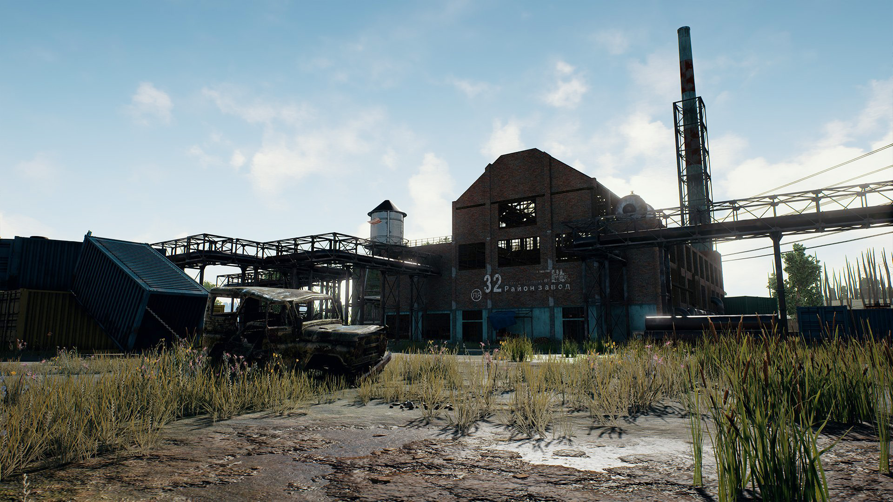

Update voor Recente Server & Connectie Problemen
10.03.2017
Spelers,
Vandaag willen we het hebben over connectie, login en server crash issues waar sommige spelers mee te maken hebben.
Ten eerste, willen we onze excuses aanbieden aan iedereen voor de recente server probelmen dat heeft veroorzaakt in lange wachttijden en enkele ongemakkelijkheden.
Ons ontwikkeling team heeft continu de service architecture ge-upgrade om te zorgen dat het stijgende aantal spelers de servers geen problemen zal bezorgen. Daarentegen, waren er een paar onverwachte problemen tijdens piek tijden en was het niet mogelijk om problemen te verhelpen zo snel als we het eigenlijk wilde.
We verwachte rond 1 miljoen tijdens onze "Vroegtijdige toegang" periode en daarvoor waren onze server ge-designed. Sins het einde van Juni, begon het aantal spelers heel snel te stijgen dus we begonnen een nieuwe server architecture te designen. Maar, het nummer spelers steeg sneller dan de snelheid dat we konden ontwikkelen waardoor er de laatste tijd meer problemen zijn.
Het wordt steeds moelijker om de servers bij te houden tijdens piek tijden. Terug op het bovenste, onze ontwikkelings team zal zich beter voorbereiden zodat ze een hoger aantal spelers aankunnen. Dit is iets dat we snel willen verbeteren.
Veel spelers hebben ons gevraagd waarom de servers vaak crashen in Azie. Laatst, is het aantal spelers in Azie snel gestegen en er waren tijden waar de cloud service die we gebruiken het niet meer vol kon houden en daarom geen server meer had. Om dit probleem tegen te gaan, hebben we servers toegevoegd van een andere cloud en dat werkt tot nu toe goed. Sommige servers spelen te veel mensen, dat zorgt voor frequente crashes. Onze ontwikkelings team onderzoekt het probleem zodat het in de toekomst voorkomen kan worden.
Ons ontwikkelings team doet hun best om te zorgen dat alle PUBG spelers in de wereld gemakkelijk PUBG kan spelen wanneer ze ook willen. Opnieuw, willen we graag onze excuses aan bieden aan alle spelers die problemen heeft gehad met crashes of server problemen. Wees gerust dat we twee keer ons best doen om het te verbeteren. Ook hebben we veel gewerkt aan het optimaliseren van het spelen en dingen toe tevoegen.
Ons team doet zijn best op het een betere ervaring te maken voor iedereen.
Bedankt voor uw geduld en begrip.
Lees meer..